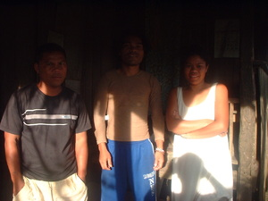

tatelu 
/tatɔlu/
Var. telu
num.
“three”
1.
num.
three (counting)
Gramm. The root telu has been prefixed with rdpC-a. See entry telu for other derived forms.
Gramm. Sometimes used as the counting form, although telu is more common.
Eng. 03; three (counting)
OCM: Numeration (802)
DDP: Cardinal numbers (8.1.1.1)
Online dict status: r
Usage level: B
adj.
three (adjective)
Gramm. The root telu has been prefixed with rdpC-a. See entry telu for other derived forms.
Eng. three (adjective)
Tag. tatló
Ceb. tulu
Ilo.: tállo
Tigwanon: tatelu
WBM: tetelu
Ilianen: tetelu
Binukid: tatulu
Sarangani: telu
Cotabato Manobo: telu
Tasaday: telu
Dibabawon: tateu
Cagayano: tallu
Kinamigin: tatuu
Tagbawa: tellu
Obo: ʔatallu
Proto: (ta)telu
OCM: Numeration (802)
DDP: Cardinal numbers (8.1.1.1)
Online dict status: r
Usage level: B
2.
adj.
(kinatelu, kin-) three-pronged
kinatelu ne tunud
three-pronged arrow
Eng. three-pronged
OCM: Numeration (802)
Online dict status: r
Usage level: R
Created: 22/May/2009
Updated by: RJH,QDL,NJK,NJK,RJH,NJK
Last updated: 24/Nov/2009
"Tatelu" in text "Violence at Palakpakan Fiesta"
"tatelu" in text "Aurelio's Marriage"
"Egtatelu" in text "Childbirth"
"tatelu" in text "Making Lead Sinkers"
"tatelu" in text "Proving Innocence I (When Accused of Theft)"
"tatelu" in text "Proving Innocence I (When Accused of Theft)"
"tatelu" in text "Proving Innocence I (When Accused of Theft)"
"tatelu" in text "Requesting a Loan"
This page last updated: 19/May/2012
Copyright © 2009-2010, Matigsalug Language Christian Association, Inc